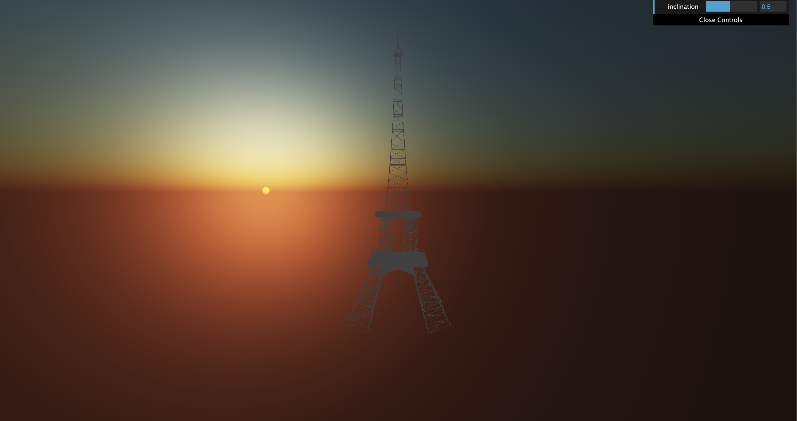

About
Bonjour! This project was inspired by the famous iron architectural structure in Paris - better known as the Eiffel Tower. The Eiffel Tower is placed in front of a sunset backdrop that can be controlled to set below the horizon. A twinkling lightshow follows the sunsetting to complete the experience.
Before:
After:
Eiffel Tower
The Eiffel Tower was implemented with lathe, box, sphere, cylinder, and wireframe geometries. To build the tower, programming was completed in stages corresponding with the upper, middle, and lower components of the landmark. The iconic structure of the Eiffel Tower was challenging to replicate because of its smooth curves yet rigid composition. A balance was achieved by combining traditional geometries with curved and unique polygons. The upper parts of the tower include a rectangular spire, segmented sphere dome, hexagonal platform, and central lathe wireframe. Code for the lathe geometries was adapted from our in-class example. These materials were positioned and sized accordingly to mimic the dimensions of the tower. The lathe wireframe at the center of focus is created from two different Bezier curves each with four control points. As there is some repetition in the shape of the curved supports, this pattern was used throughout the design as seen in the shape of the legs. The center of the tower is made up of four legs and two supports – one wireframe and one solid box geometry. The legs are also lathe geometries, however, made with one Bezier curve and segmented by four to create the curving rectangular shape. The lower portion of the tower mimics the middle’s legs and supports with minor changes. The legs of the base had to be rotated in the x and z axis directions. Additionally, an arch support had be added between the gaps of every base support. This arch is a modified trapezoid with a quadratic curve base. In the final stage of the scene, after the sun sets, a lightshow on the tower occurs as is tradition in Paris. This animation is made from blocks of randomly positioned points that will either change their y position up or down in periods corresponding to the clock. Once their position of y reaches a certain threshold the animation stops, and the tower is left with its lights shining bright. The design of this animation was inspired by and adapted from our snow globe class example.
Sky
The background of the scene is mainly composed of the sky and a sun which sits to the left of the Eiffel Tower. This sky is adapted from the three.js example found here: Sky Shader and Sky Shader Code. Adapting this code was quite difficult as we had to make sure that we had all the features that came in the code and also make sure the code is compatible with the rest of our code, especially when it came time to combine the background and the tower.
Our background went through four iterations of changes before we arrived at our final scene. The first iteration
mainly consisted of the trying to adapt the code of the tower to the code for the shader.The second iteration was the animation of the sun.
Our idea was to have the sun start in the left corner above the horizon and travel across
the screen until it set. This iteration started off with the animation style that we saw in class. The style of the code
was based off this example: Moving Cube.
However this did not work, so we tried to use a while loop that would remove the sun, adjust the position and rerender until
the sun was below y = 5000. This attempt was the closest attempt as the console.log would print the y position of the sun
which was shown to be decreasing and stopping once reaching 5000, yet the actual sun in the scene was not moving.
So then we moved onto the third iteration. In this iteration, we went back to the original source code we adapted and
created a gui control where the user can choose between three different types of day: noon, sunset, night. However,
this was not the best way of creating the overall scene we had in mind.
Noon:
Sunset:
Night:
Finally, on the fourth iteration, we were able to create the scene. We used the GUI features again and added if statements
within the gui function to check for when the sun was below the horizon. Once the scene was dark, the lights would turn on.
Before:
Sunset: 
Night:
Main Graphics Concepts Used

Hierarchical Modeling
Graphics Concept #1
Material, Lighting, Shading
Graphics Concept #2

Curved Lines and Surfaces
Graphics Concept #4
Animation
Graphics Concept #8
User Interaction
Graphics Concept #7